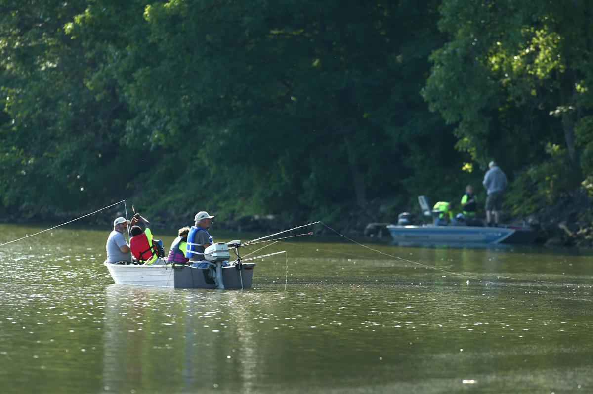

Great Minnesota Fishing
Minnesota has some amazing locations to fish. Out of 10,000 lakes to explore here are just three with some amazing fishing.
-
If you would like to stay close to the cities, an inner city lake Nokomis is a great place to fish.
- This is one of the better crappie lakes in the Twin Cities. In the spring, fish the north shore. Because it gets more sun and warms up quickly, the water here attracts fish. From the fishing pier, cast a small minnow hooked
2 feet below a bobber. (Minnesota DNR, 2022)
- Species: Bluegill, Crappie, Northern Pike, Largemouth Bass, Walleye, Tiger Muskie, Yellow Perch, Bullhead, Carp
- Directions to Visit Lake Nokomis
-
Heading just a little North of the Cities with amazing fishing is Mille Lacs Lake.
- Mille Lacs Lake is best known for its phenomenal walleye catch rates but also offers several other trophy fishing opportunities. During the winter, venture out on the lake for a fast-paced walleye bite, catch a few tullibee
or fish for some trophy northern pike. During the summer, you may hook into a trophy smallmouth bass, muskellunge or northern pike. (Minnesota DNR, 2022)
- Species: Walleye, Northern Pike, Muskie, Jumbo Perch, Small & Large Mouth Bass and Tullibee
- Directions to Visit Mille Lacs Lake
-
If an adventure is on horizon then there is not better place to explore then Kabetogama Lake.
- Fishing Lake Kabetogama Lake Kabetogama in Voyageurs National Park is 22 miles long, 6 miles wide and covers more then 25,000 acres. Kabetogama has hundreds of islands and inlets and offers more then 75 miles of shore line.
- Species: black crappie, bluegill, burbot, cisco species, lake sturgeon, lake whitefish, largemouth bass, northern pike, pumpkinseed, rock bass, sauger, smallmouth bass, tullibee (cisco), walleye, yellow perch, mooneye, redhorse,
shorthead redhorse, silver redhorse, white sucker, blacknose dace (western), blacknose shiner, bluntnose minnow, brassy minnow, brook stickleback, common shiner, emerald shiner, fathead minnow, finescale dace, golden shiner,
Iowa darter, Johnny darter, logperch, longnose dace, mimic shiner, ninespine stickleback, rainbow smelt, sculpin, shiners, slimy sculpin, spottail shiner, tadpole madtom, trout-perch, test
- Directions to Kabetogama Lake